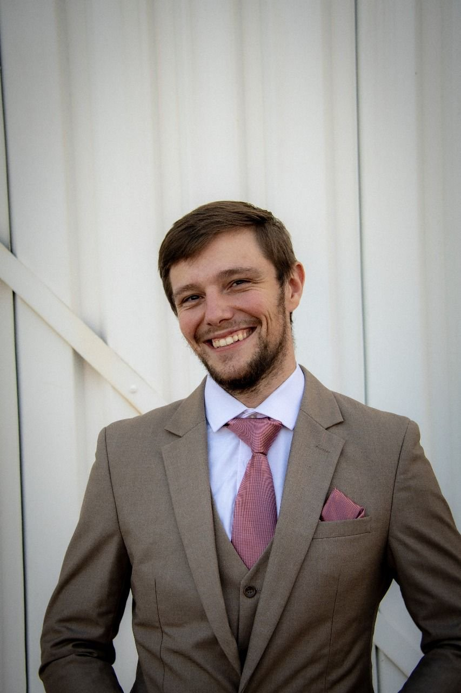
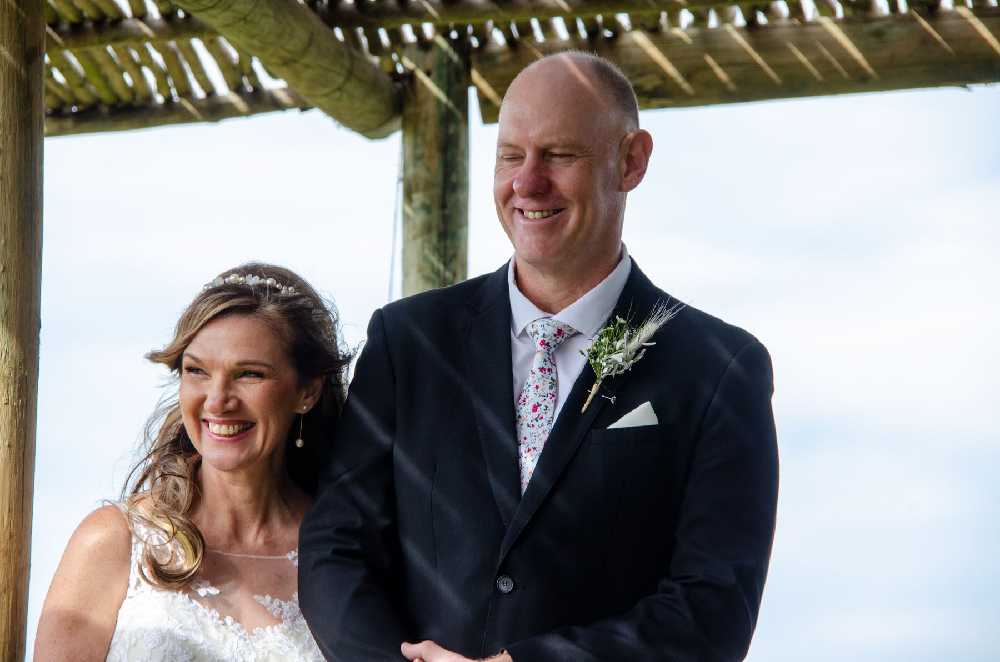

Hello, I’m Chris

I’m the photographer behind Blair Hook Photography, and my favourite part of any session is the moment people forget the camera is there.
My path to photography was anything but conventional. I spent years working as a commercial diver and later as a commercial dive supervisor: demanding work, in conditions where calm, preparation and precision are everything. I saved from that work to return to my studies, and I’m now studying electromechanical engineering in Potchefstroom.
Those years shaped how I photograph. Diving taught me to stay composed, plan carefully and look after the people around me. Engineering made me meticulous about detail. Together, they mean your session feels effortless on the surface, with careful thought behind every frame.
I work only on location, never in a studio, because I believe the best photographs happen where your story actually takes place. And I never rush: we take the time the moment deserves.
In their words
“Such a fantastic experience from start to finish. The level of professionalism was outstanding, and the photos exceeded my expectations.”
“Chris is absolutely amazing with suggestions and direction if you are a bit unsure in front of the camera. He makes you feel at ease and every shoot just a joy.”
“Whether you are looking for a photographer for a graduation, wedding or your dog's pregnancy shoot, there is truly no one I could recommend more.”
